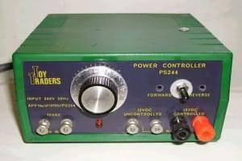
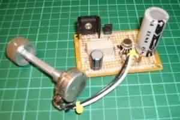
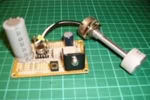

NAVIGATION
TOP of Page
MAIN Page
HOME Page
DC CONTROLLER
Specifications
Operation
Circuit Diagram
Circuit Board
|
Specifications for the DC Controller
 DC Controller mounted in Case
Input Voltage :
Output Voltage :
Output Current :
Voltage Regulation :
Short Circuit Protection :
|
240 volts rms AC mains power
1.1 - 12.5 volts DC
1.2 Amp capability
0.5%
Yes
|
TOP
MAIN
HOME
Operation of the DC Controller
This power supply is based on the uA723 integrated circuit. The IC acts as a negative feedback voltage
regulator driving the 2N3055 power transistor. The reference (pin 4) is a zener regulated voltage of 6.8
volts. This voltage is available across the SPEED control and the 470 ohm resistor going to earth (pin 5).
The control (pin 3) is driven from a tap on the SPEED control, and can be adjusted from 6.8 volts at
maximum setting to 0.58 volts [ie 6.8 volts * 470 / (470 + 5000)] at minimum setting. The control voltage
(pin 3) is compared to the feedback (pin 2) voltage, (and here's the important bit) the track voltage
driven from the output (pin 6) is varied by the IC until the voltages at the control pin and the feedback
pin are the same.
Because the feedback voltage is derived from a dividing tap on the output voltage, then the track voltage
has to be a multiple of the feedback voltage, as determined by the 560 and 470 ohm divider resistors. In
this case the track voltage is 1.839 times the feedback voltage [ie Vfeedback * (470 + 560) / 560].
If the track voltage is 1.839 times the feedback voltage, it must be also be 1.839 times the control pin
voltage ie 1.839 * 6.8 volts = 12.507 volts at maximum, and 1.839 * 0.58 volts = 1.066 volts at minimum.
The 0.47 ohm resistor detects the current flowing in the track and applies a voltage across the protection
terminals (pins 10 and 1) of the IC. When the voltage reaches 0.6 volts across the resistor, the IC rapidly
switches the output voltage to minimum, but maintains the current. The maximum current Imax = 0.6 volts /
Rprotection = 0.6/0.47 = 1.276 Amps. When a short circuit is applied to the track, fast transient response
is guaranteed by the 100pF capacitor coupled to the Frequency Compensation input (pin 9). The IC voltage
output (pin 6) is always 0.7 volts above the track voltage due to the base to emitter voltage of the 2N3055.
TOP
MAIN
HOME
PLEASE NOTE: Two versions of the LM723 IC exist. There is a circular 10 pin and a 14 pin DIL version. They
have a different geometry of pin layout. Be sure to check the pins for correct PCB layout. The components
are available from Dick Smiths, Jaycar or Altronics. Try using a 1.5 Amp 8 volt DC plug pack instead of the
transformer and rectifier. Use a double pole, double throw switch to effect locomotive reversal. DO NOT earth
the negative rail of the supply if you are using multiple supplies to a layout.
I have used these controllers for years, and find they are eminently successful at powering anything from Lima
to Athearn locomotives. The short circuit protection is a real plus, as is the regulation which means the track
voltage is kept constant with varying load current demand. I have modified the power supply in the photographs
by adding a second transistor (BD139) to drive the output transistor (MJE3055) to higher output current. You
will not normally require this, as the uA723 will deliver 100mA from the output (pin 6) and a 2N3055 is able to
easily boost this to the required 1.2 Amps.
HOME
MAIN
TOP
Circuit diagram of the DC Controller
Circuit board of the DC Controller
|

|

|
|
|
TOP
MAIN
HOME
|